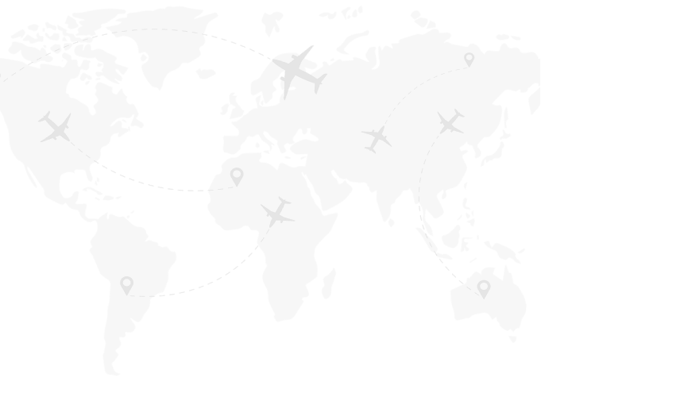

Для перевезення небезпечних вантажів потрібні два рівні допуску: компанія (транспорт, відповідальна особа, дозволи, страхування) та водій (сертифікат ADR). Нижче — покрокові інструкції та практичні поради.
Підприємство має бути зареєстрованим перевізником небезпечних вантажів згідно з Законом України № 1644-III. Визначте класи НВ, якими плануєте займатися.
ТЗ проходить технічний огляд у сервісному центрі МВС. Видається свідоцтво допуску відповідної категорії (наприклад, EX/II для 1 класу, FL для легкозаймистих рідин).
Обов'язковий договір страхування на випадок негативних наслідків під час перевезення НВ. Сума покриття визначається законодавством.
На підприємстві обов'язково призначають відповідальну особу з перевезення небезпечних вантажів — працівника з дійсним сертифікатом підготовки (навчання в акредитованому центрі). Оформлюється наказ про призначення. Вона контролює безпеку перевезень, документи, навчання персоналу та дотримання вимог ADR/ДОПНВ.
Кожен водій, який перевозить НВ, має мати сертифікат ADR з відповідними класами вантажу. Для 1 класу — додаткова спеціалізована підготовка. Терміни дії сертифікатів відстежує відповідальна особа.
ADR-комплект, вогнегасники, знаки небезпеки, помаранчеві таблички, план дій при аварії. Упаковка вантажу — за стандартами ООН.
Внутрішній ринок: погодження маршруту з поліцією, дозвіл на перевезення ВР (для 1 класу), супровідна документація на кожне перевезення.
Міжнародні перевезення ADR: дозвіл надається лише компаніям, які мають не менше 3 років досвіду перевезення небезпечних вантажів на внутрішньому (національному) ринку. Підтверджується журналом перевезень, договорами та звітністю.
Свідоцтво допуску ТЗ, поліс страхування, наказ про призначення відповідальної особи, сертифікат підготовки відповідальної особи, договори з водіями, журнал перевезень НВ (для підтвердження стажу), інструкції з безпеки.
Водійське посвідчення відповідної категорії (C, CE), медична довідка, вік від 21 року (для окремих класів — від 23).
Навчання в акредитованому центрі: класифікація НВ, маркування, упаковка, дії при аварії. Тривалість — від 14 годин (залежно від обраних класів у сертифікаті).
Тестування знань у навчальному закладі. У сертифікаті зазначаються класи НВ, з якими водій має право працювати (танк, вибухові тощо).
Для вибухових матеріалів потрібна додаткова підготовка окремо від базового курсу. Без неї перевезення 1 класу заборонене.
Сертифікат ADR дійсний 5 років. Після цього — підтвердження кваліфікації (скорочене навчання + іспит) або повне перенавчання.
Подайте заявку за 12 місяців до закінчення терміну. Пройдіть підтвердження кваліфікації в акредитованому центрі — це дешевше і швидше, ніж повне навчання.
Перевезення НВ без сертифіката ADR — адміністративна відповідальність для водія та перевізника, зупинка ТЗ, штрафи.
Потрібна допомога з ADR? Зв'язатися з нами · Про ADR-вантажі